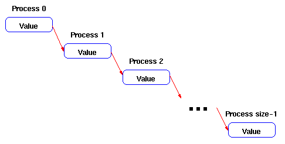

Write a program that takes data from process zero and sends it to all of the
other processes by sending it in a ring. That is, process i should receive
the data and send it to process i+1, until the last process is reached.

Assume that the data consists of a single integer. Process zero reads the
data from the user.
You may want to use these MPI routines in your solution:
MPI_Send
MPI_Recv